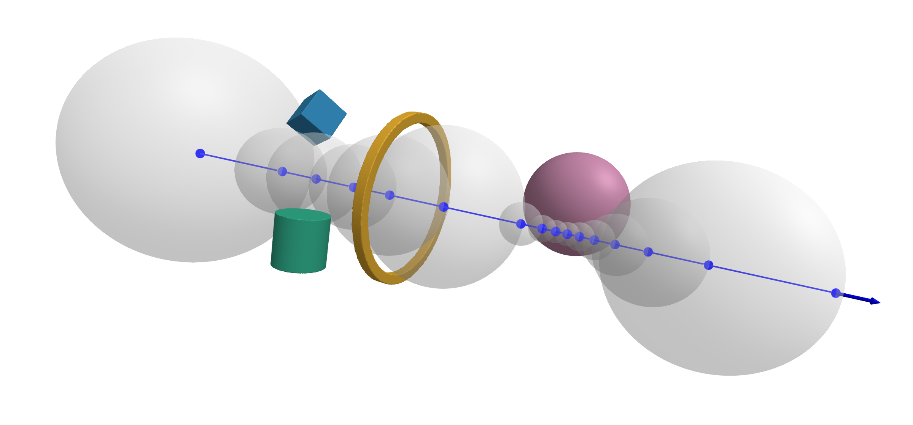

Signed Distance Functions (SDFs)
Signed distance functions in general represent geometry by providing a function that e.g. maps a point in R³ onto the closest scalar distance to the surface of the geometry [25]. This representation technique has already been used extensively for ray tracing applications in the field of computer graphics. For a quick introduction into SDFs the website of Inigo Quilez is referred to.
In the field of ray-based optical simulations, mathematical surface definitions, e.g. in the form of analytical equations for the surface sag or NURBs, are common [26, p. 44 ff]. However, they are also costly to implement since no "one-size-fits-all" algorithm exists which could be implemented for the intersect3d function. This is why for this package, SDFs have been chosen to represent curved surfaces. This is due to the fact that for exact SDFs
- the point of intersection can be calculated exactly with reasonable convergence criteria
- the normal vector at the point of intersection can be calculated exactly using automatic differentiation
- the ray marching algorithm works for any shape that provides a SDF
- the ray marching procedure can be computed very efficiently
The viability of SDFs for radiation transfer simulations has already been demonstrated in the literature [27]. For optical ray tracing this is a new application to the best of our knowledge. Representing lens shapes using the exact shape SDFs provided by Inigo Quilez is straight forward by combining cylinder and cut-sphere SDFs using boolean addition and subtraction. Further, custom iterative algorithms have been developed by O. Kliebisch in order to tie in (rotationally symmetrical) aspherical lenses into the ray marching formalism.
In order to implement new SDFs, the AbstractSDF interface should be used.
BeamletOptics.AbstractSDF — Type
AbstractSDF <: AbstractShapeProvides a shape function based on signed distance functions. See https://iquilezles.org/articles/distfunctions/ for more information.
Implementation reqs.
Subtypes of AbstractSDF should implement all reqs. of AbstractShape as well as the following:
Functions
sdf(::AbstractSDF, point): a function that returns the signed distance for a point in 3D space
The following shapes are currently implemented:
julia> BeamletOptics.list_subtypes(BeamletOptics.AbstractSDF);└── BeamletOptics.AbstractSDF ├── BeamletOptics.AbstractLensSDF │ ├── BeamletOptics.AbstractAsphericalSurfaceSDF │ │ ├── BeamletOptics.ConcaveAsphericalSurfaceSDF │ │ └── BeamletOptics.ConvexAsphericalSurfaceSDF │ ├── BeamletOptics.AbstractCylindricalSurfaceSDF │ │ └── BeamletOptics.AbstractAcylindricalSurfaceSDF │ │ ├── BeamletOptics.AconcaveCylinderSDF │ │ └── BeamletOptics.AconvexCylinderSDF │ ├── BeamletOptics.AbstractSphericalSurfaceSDF │ │ ├── BeamletOptics.ConcaveSphericalSurfaceSDF │ │ └── BeamletOptics.ConvexSphericalSurfaceSDF │ ├── BeamletOptics.ConcaveCylinderSDF │ ├── BeamletOptics.ConvexCylinderSDF │ ├── BeamletOptics.MeniscusLensSDF │ ├── BeamletOptics.PlanoSurfaceSDF │ └── BeamletOptics.SphereSDF ├── BeamletOptics.BoxSDF ├── BeamletOptics.CutSphereSDF ├── BeamletOptics.CylinderSDF ├── BeamletOptics.RightAnglePrismSDF ├── BeamletOptics.RingSDF └── BeamletOptics.UnionSDF At least 22 types have been found.
Ray marching algorithm
The algorithm works by iteratively propagating a ray from the point of origin through a scene. At each step, the SDF/s is/are evaluated at the current point along the ray. The scaral value tells the algorithm how far the current positions is from the nearest surface. This distance is guaranteed to be a safe step size: the ray can advance by that amount without “tunneling” through any geometry. The process repeats until one of two conditions is met: (1) the distance becomes smaller than a threshold (the ray has hit a surface), or (2) a maximum number of steps or maximum distance is exceeded (the ray escapes without hitting anything). A visualization of this process is provided below. A ray propagates from the left to the right end of the scene. The step size is visualized as the radius of a sphere for each iteration.

Surface normals can be estimated numerically by sampling the SDF gradient around the hit point or by generating the automatic derivative of the SDF for exact descriptions. BMO uses both procedures, depending on the SDF type.
Union SDFs
In order to make use of the dispatch capability of Julia, the UnionSDF allows users to easily combine SDFs.
BeamletOptics.UnionSDF — Type
UnionSDF{T, TT <: Tuple} <: AbstractSDF{T}This SDF represents the merging of two or more SDFs. If the constituent SDFs do not overlap (they can and should touch) the resulting SDF should be still exact if the constituent SDFs are exact.
The intended way to construct these is not explicitely but by just adding two AbstractSDFs using the regular + operator.
s1 = SphereSDF(1.0)
translate3d!(s1, Point3(0, 1.0, 0.0))
s2 = SphereSDF(1.0)
# will result in a SDF with two spheres touching each other.
s_merged = s1 + s2